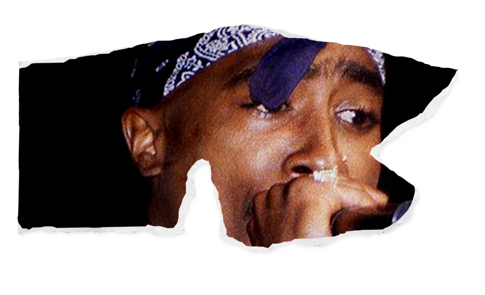
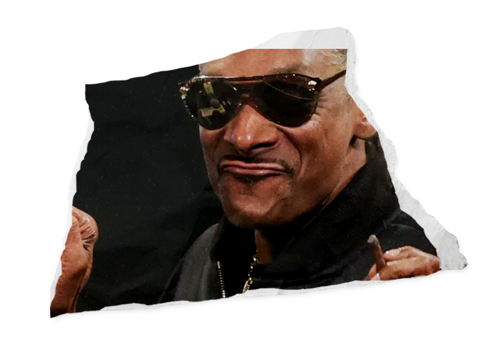
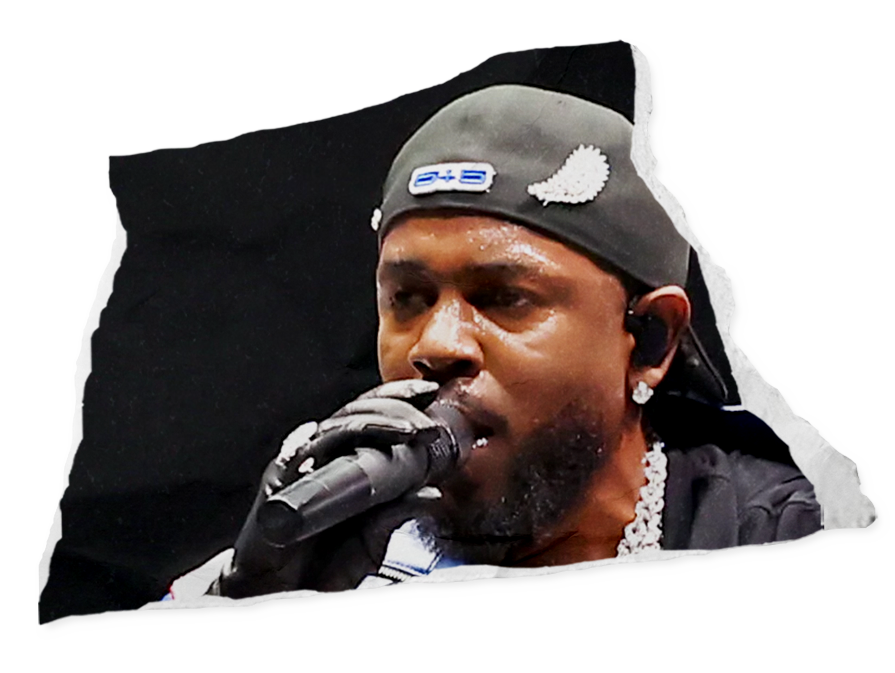

TRACK
STATION
what is rap?
  
Rap is a musical genre and cultural movement born in the 1970s Bronx, blending rhythmic spoken lyrics with beats. As a core element of hip-hop, it influences music, fashion, and language worldwide.